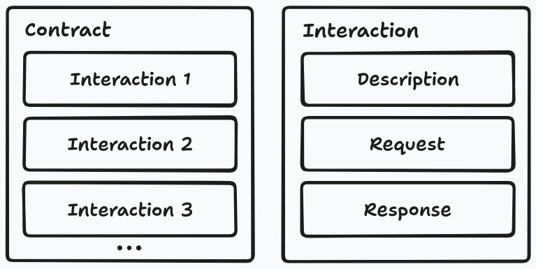

A Brief Introduction to Contracts
Builds on the concepts introduced in A Brief Introduction to CDCT.
Communication in CDCT is defined as the Consumer sending a request to the Provider, followed by the Provider sending a response to the Consumer. A Contract is essentially made up of a number of these exchanges, which we will call Scenarios. Each Scenario additionally has a brief description of what happens in the Scenario. See the picture below for an illustration.

In a Scenario, the request section is a concrete example of a real request, and the response section is a number of rules that the response must follow. The interpretation is that if the Provider receives the example request, its response must follow the response rules. The response section additionally has an example of a response that follows the rules.
This means that every Scenario actually is a test — and this is indeed how the Provider proves that it obeys the contract. It runs every Scenario as a test where it pretends to receive the example request, and then it checks that its responses obey the rules.
However, there is one problem not yet adressed by this model: The same request might give two completely different answers depending on the state of Provider. Imagine an example request that asks for the information of a user called Oliver. We write rules that dictate that the response must include birthday, email, address, etc. However, if there is no user called Oliver when the Provider runs the test, there will be no such information to give — we might get an empty response or even an error instead.
This problem is solved by adding one additional section to the Scenario: A so-called Provider State. This is a sentence that describes the precondition for the test in human language. The people developing the Provider then have to make sure that their tests know what to do for every Provider State in their Contracts. For our example, the Provider State might be "given a user called Oliver exists". When the Provider reads this text, it knows to create such a user, which will allow it to respond properly.